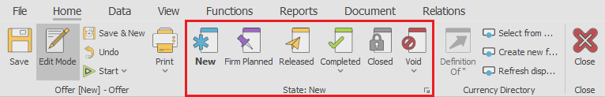
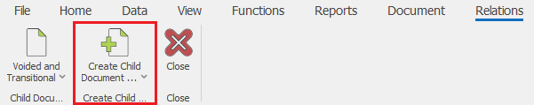
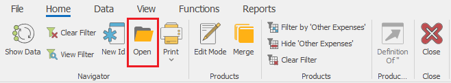

Most commonly used commands
Here is a list of the most commonly used commands.
Documents
- Definition - opens the definition of the selected entity.

- New document - usually available in the document navigators, used to create new documents.

- Change a document state - the set of butttons with which you can change the document state to 'Planned', 'FirmPlanned', 'Released' ... or Void a document
Command ribbon >> Home:

- Print - opens a print preview of the default printout layout. The dropdown contains printing modes and a list with all availabe printout layouts for this record.
Command ribbon >> Home:

- Create Child Document - used to manually create a sub-document i.e. the next document of the document flow. Opens a list with all available document types, which can be created from the current document, according to the preset document routes.
Command ribbon >> Relations:

- Change view - used to change and navigate between the available views.
Command ribbon >> View

Navigators
- Show Data - loads the data into the navigator, according to the specified filters into the filter panel.
Command ribbon >> Home:

- Create new - used to create a new record of the particular entity.
Command ribbon >> Home:
- Open document - opens the single form of the selected document.
Command ribbon >> Home

General
- Change Enterprise company - used to change the enteprise company in which you are currenly working. Opens a drop down list with the enterprise companies available into the datatabase.
Main menu >> Command ribbon >> Home:

Or File menu >> Settings >> Change Enterprise Company and Location…

- Change location - used to change the enteprise company location in which you are currenly working. Contains a dropdown list with the company locations of the selected enterprise company.
Main menu >> Command ribbon >> Home:

- Change current role - opens a dropdown list with the roles available for the particular user.
Main menu >> Command ribbon >> Home:

- Change of style - used to change the visual style i.e. theme of the ERP.net Windows Desktop Client
Main menu >> Command ribbon >> Home: